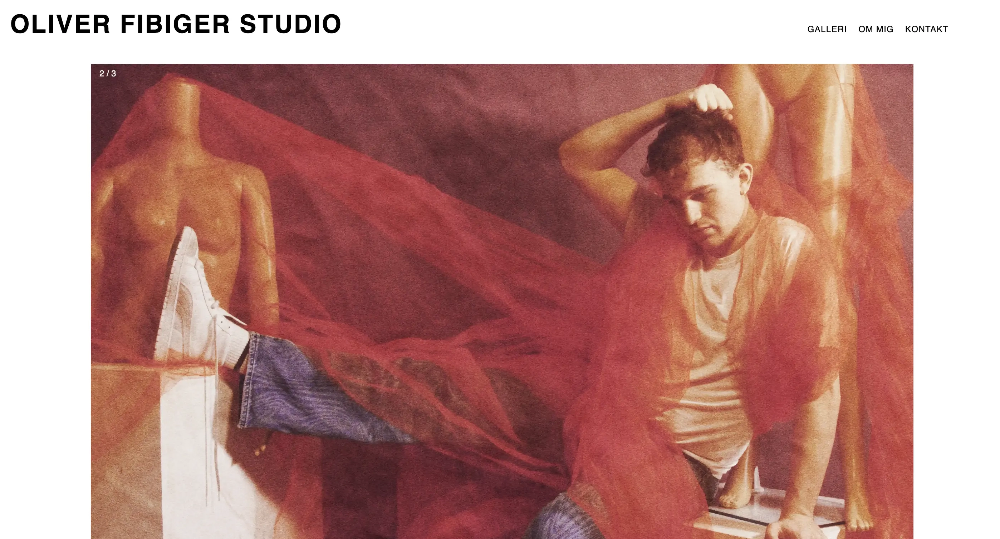

T5 Grundlæggende Indhold
I opgave 05.02.01 redesign var vores mål at lave et redesign for en forbedret brugeroplevelse. Ved hjælp fra forskellige test i form af ekspert test (heuristik test), 5-sek test og BERT-test. Min plads i gruppen var som product owner da jeg havde tæt kontakt med den virksomhed vi arbejdede sammen med. Min ansvarsområder bestod derfor af kundekontakt, udøvelse af test og overblik over resultaterne. Det udførte jeg ved brug af eksperttest, 5-sek test,BERT-test og tænke højt test. Det gav mig et indblik i vigtigheden af brugertest undervejs i ens process og hvilke forbedringer man kan lave i ens færdige produkt. De testresultater jeg modtog var derfor med til at påvirke nogle designløsninger som endte med et rigtigt positivt resultat på det endelige produkt.
Styletile og Moodboard
Refleksion
Til næste gang, ville vi have haft lavet en prototype inden vi begyndte på at kode, for spare tid på selve redesignet af sitet. Vi sprang prototype delen over, da vi ikke så den, men også følte at dette step var irrelevant. Men efter nogle snakke med underviserne, har vi indset at en prototype ville være en god ide i sidste ende, da man kan spare tid og få bedre overblik over mulige design resultater. I forhold til vores tænke højt test ville vi til næste gang sørge for at der var mere fokus på den service der bliver tilbudt allerede fra forsiden så brugeren er 100% klar over hvad der bliver tilbudt. Hvis vi havde haft mere tid, havde vi udarbejdet et logo til fotografen. Vi havde nogle få ideer op og vende, som bl.a. Et kamera hvor linsen dannes som et O for Oliver. Dog var der ikke tid til dette, så vi droppede ideen og lagde vores energi mere nødvendige steder.